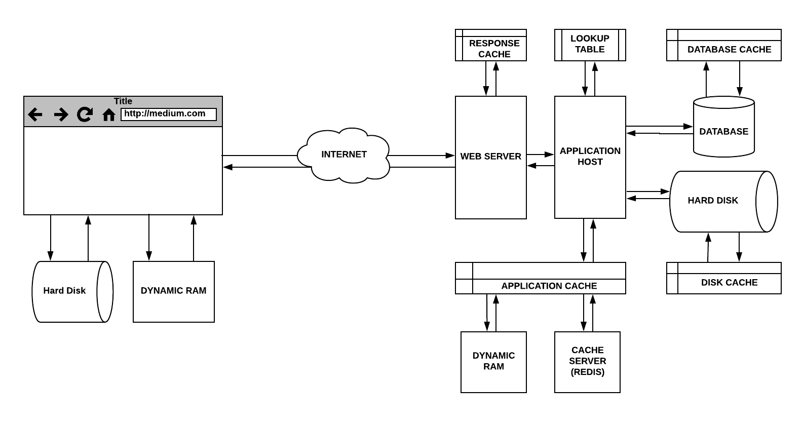

[번역] 웹 캐싱의 숨겨진 요소들
Apr 7, 2018 00:00 · 3452 words · 7 minute read
The hidden components of Web Caching을 번역한 글입니다.
캐싱(Caching)은 애플리케이션의 처리 속도를 높여준다. 이미 가져온 데이터나 계산된 결과값의 복사본을 저장함으로써 처리 속도를 향상시키며, 이를 통해 향후 요청을 더 빠르게 처리할 수 있다. 대부분의 프로그램이 동일한 데이터나 명령어에 반복해서 엑세스하기 때문에 캐싱은 효율적인 아키텍처 패턴이다.
캐싱은 웹 브라우저부터 웹서버와 하드디스크 및 CPU에 이르기까지 모든 곳에 적용된다. 그럼 이제 하위 레이어부터 상위 레이어까지의 순서대로 다양한 캐싱 레이어에 대해서 알아보자. 이 포스팅은 캐싱의 동작 방식보단 데이터가 캐싱되는 위치에 초점을 두고있다.
CPU 캐시
캐시 메모리는 RAM과 CPU 사이의 버퍼 역할을 하는 매우 빠른 메모리 타입이다. 이는 필요시 CPU가 즉시 사용할 수 있도록 자주 요청되는 데이터와 명령어들을 저장한다.
CPU는 적은 양의 고속 스토리지로 구성된 레지스터(Register)라고 하는 특수한 온칩 메모리(On-chip memory)를 내장하고있다. 레지스터는 가장 가깝고, 가장 작으며 가장 빠른 메모리이다. 때때로 이 레지스터를 L0 캐시라고 부르기도 한다.
또한 CPU는 L1 캐시 (레벨 1)에서 L4 캐시 (레벨 4)까지 최대 4개의 캐시 레벨에 엑세스할 수 있다. CPU 및 마더보드의 아키텍처는 레지스터가 L0 캐시인지 L1 캐시인지를 결정하며, 또한 여러 캐시 레이어가 CPU와 마더보드중 어디에 위치하는지도 결정한다.

디스크
HDD는 RAM에 비해 느리지만, SSD로 인해 점점 빨라지고 있다.
컴퓨터 스토리지에서, 디스크 버퍼 또는 캐시 버퍼라고도 불리는 디스크 캐시는 CPU와 물리적인 하드 디스크 사이의 버퍼 역할을 하는 HDD에 내장된 메모리이다.
디스크 캐시는 디스크에 내용을 읽거나 쓸 때, 그 데이터를 곧 다시 읽게된다는 것을 전제로 한다.
램 (RAM)
임시 데이터를 RAM과 HDD에 저장하는 것의 차이점은 성능, 비용 및 CPU 근접성이다.
램은 응답 시간이 수십 나노초인 반면에 HDD는 수십 밀리초의 응답 시간을 갖는다. 무려 여섯 자릿수나 차이 난다!
캐싱이 어떻게 동작하는지 더 깊이 이해하면 매우 효율적이고 비용이 저렴하며 유지 보수가 쉬운 애플리케이션을 설계할 수 있다.
간단한 웹서버
웹에 요청을 날리면, 요청은 웹 브라우저로부터 하드 디스크의 파일 시스템에 있는 정적 리소스를 제공하는 웹 서버로 전달된다.
웹 사이트 요청시 정적 파일을 제공한다고 가정해보자. 일반적인 워크플로우에서 인입 요청은 웹 서버에 의해 처리된다. 웹 서버는 하드 디스크로부터 파일을 가져와 파일의 내용을 반환하며 응답한다.
첫 번째 요청에서, 하드 디스크는 캐시를 확인하여 “캐시 미스(Cache miss)“를 발생시킨다. 그리고 하드 드라이브로부터 데이터를 가져와 추후에 다시 요청 받을 수 있음을 가정하고 캐시에 저장한다.
이후 요청부터는 캐시 조회시 “캐시 히트(Cache hit)“를 발생시킨다. 이 데이터는 덮어씌워져서 캐시 미스를 일으키기 전까지 버퍼에서 제공된다.
데이터베이스 캐싱
데이터베이스 쿼리는 데이터베이스 서버에서 수행되기 때문에 속도가 느려지고 부하가 몰릴 수도 있다. 이러한 쿼리들이 반복되면 결과값을 데이터베이스에 캐싱함으로써 응답 시간을 향상 시킬 수 있다. 이는 다수의 머신이 동일한 데이터베이스에 동일한 쿼리를 사용하는 경우에 더욱 유용하다.
대다수의 데이터베이스 서버는 최적화된 캐싱을 위한 기능을 기본적으로 지원하나, 여러분의 애플리케이션의 요구사항에 맞게 수정할 수 있는 많은 파라미터들이 존재한다.
응답 캐싱
웹 서버는 응답을 캐싱하도록 구성할 수 있어 유사한 요청이 애플리케이션 호스트로 전달되지 않도록 할 수 있다. 이와 유사하게, 애플리케이션 호스트는 비용이 높은 데이터베이스 쿼리나 자주 요청되는 파일들에 대한 응답의 일부를 캐시할 수 있다.
웹 서버의 응답은 메모리에 캐싱된다. 애플리케이션 캐시는 로컬 인메모리에 저장되거나 캐시 서버 위에서 실행되는 레디스와 같은 인메모리 데이터베이스에 저장할 수 있다.
웹 서버와 애플리케이션 호스트는 애플리케이션 아키텍처에 따라 동일한 서비스 또는 서로 다른 서비스에 존재할 수 있다
함수 메모이제이션 (Memoization)
메모이제이션은 비용이 높은 함수 호출을 최적화하여 특정 입력에 대해 해당 함수를 한 번만 실행되도록하는 캐싱의 한 형태이다. 이는 함수의 입력 파라미터에 해당하는 키와 결과값에 해당하는 값을 매칭시켜둔 조회 테이블을 통해 구현할 수 있다.
메모이제이션은 프로그램의 성능을 높이는데 사용되는 일반적인 기술이다. 그러나 이는 드물게 요청되는 함수나 빠른 응답 속도를 가진 함수에 대해서는 적합하지 않을 수도 있다.
HTTP 헤더를 통한 브라우저 캐싱
모든 브라우저는 HTML 페이지, 자바스크립트 파일 및 이미지와 같은 웹 문서의 임시 저장을 위해 HTTP 캐시 (웹 캐시)의 구현을 제공하고있다.
이는 서버 응답이 올바른 HTTP 헤더 지시자를 제공하여 브라우저가 응답을 캐싱할 수 있는 시기와 지속 기간을 지시할 때 사용된다.
이는 아주 강력한 기능이며 다음과 같은 이점을 지녔다:
- 리소스가 로컬 캐시로부터 빠르게 로드되기 때문에 사용자 경험이 향상된다. 요청이 네트워크를 통해 전송되지 않기 때문에 왕복 시간(RTT, Round Trip Time)이 발생하지 않는다
- 애플리케이션 서버 및 파이프라인의 다른 구성 요소에 대한 부하가 줄어든다
- 불필요한 대역폭에 대한 지불 비용이 줄어든다

프록시 서버
컴퓨터 네트워크에서 프록시 서버는 컴퓨터 시스템, 하드웨어 어플라이언스 또는 애플리케이션 형태로 나타난다. 이는 다른 서버의 리소스를 찾는 클라이언트의 요청에 대한 중개 역할을 하며 그 반대의 경우도 마찬가지이다.
다양한 형태의 프록시 서버가 존재한다. 사용자의 로컬 컴퓨터, 네트워크 라우터 또는 클라이언트와 대상 호스트 사이의 다양한 중개 서버에 상주할 수 있다. 모든 프록시 서버는 캐싱이 가능하다.
일반적인 타입의 프록시 서버들을 살펴보자.
게이트 웨이
나가는 요청 또는 들어오는 응답을 변형없이 단순히 포워딩해주는 프록시 서버로 게이트웨이, 터널링 프록시, 웹 프록시, 프록시 또는 애플리케이션 수준 프록시라고도 한다. 이러한 프록시는 일반적으로 방화벽 내부의 모든 클라이언트가 공유하므로 요청 캐싱에 적합한 후보가 된다.
포워드 프록시
포워드 프록시 (프록시 서버)는 일반적으로 클라이언트측 인프라에 설치된다. 포워드 프록시를 사용하도록 설정된 웹 브라우저는 나가는 요청을 프록시로 전달한다. 다음은 전달된 요청을 인터넷을 통해 대상 서버로 포워딩한다. 포워드 프록시의 장점중 하나는 클라이언트의 식별 아이디를 숨긴다는 것이다. (그러나 VPN이 익명성에 더 안전하다)
웹 가속기
웹 가속기는 웹 사이트의 엑세스 시간을 줄여주는 프록시 서버이다. 이는 가까운 미래에 엑세스할 가능성이 있는 문서를 미리 페치한다. 이는 또한 문서 압축, 암호화 속도 향상, 이미지 품질을 낮추는 작업등을 수행할 수 있다.
리버스 프록시
리버스 프록시는 일반적으로 사설 네트워크의 서버에 직접 엑세스하지 못하도록하는 내부 프록시이다. 이는 내부 서버들간의 요청을 로드 밸런싱하거나 SSL 인증을 제공하거나 요청을 캐싱하는데 사용된다. 서버측 호스트는 캐시를 하고 많은 수의 요청을 관리하도록 도울 수 있다.
엣지 캐싱
한편, 엣지 캐싱 (콘텐츠 전송 네트워크 (CDN))은 콘텐츠를 최종 사용자에게 더 가까이 저장하기 위해 캐싱 서버를 사용하는 것을 의미한다. 예를 들어, 인기있는 웹사이트를 방문하여 캐싱될 정적 콘텐츠를 다운로드하는 경우가 있다. 각 후속 사용자들은 캐시가 만료될 때까지 캐싱 서버로부터 직접 콘텐츠를 제공받는다.
원본 서버는 콘텐츠의 실제 원본이며 CDN에서 사용할 수있는 모든 콘텐츠를 제공할 수 있다.
마무리
캐싱은 하드웨어와 소프트웨어부터 네트워킹 장비와 서비스에까지 이르는 파이프라인의 모든 단계에서 발생한다. 이는 본래 서버의 전체적인 성능 향상에 있어 중요한 역할을 한다. 모든 머신은 HDD와 CPU에서 유사한 캐싱 메커니즘을 가지고 있다.
캐시는 레이턴시와 네트워크 트래픽을 줄여 리소스를 표시하는데 필요한 시간을 단축시킨다. 모든 웹 애플리케이션은 CPU 연산과 관련된 응답 지연이 있다. 예를 들어 디스크 조회, 네트워크 레이턴시, 요청 큐잉, 네트워크 쓰로틀링등이 있다. 파이프라인에 있는 다양한 시스템에 걸쳐 이러한 여러 조합을 감안하면 왕복 시간은 빠르게 늘어날 것이다.
마지막으로, 다음은 캐싱으로부터 얻을 수 있는 몇 가지 이점들이다:
- 레이턴시가 단축되어 응답 시간이 단축된다.
- 웹 트래픽이 줄어들어 왕복 시간(RTT)이 향상된다.
- 더 높은 처리량으로 본래 서버가 더 많은 요청을 처리 할 수 있다.
- 대역폭 소모가 줄어들어 네트워크 트래픽과 네트워크 정체가 줄어든다. 즉, 캐시되지 않은 실제 콘텐츠는 훨씬 빠르게 검색됨을 의미한다.
- 가까운 프록시 캐시에서 문서를 검색하면 전송 지연이 최소화된다.
- 인터넷상의 다양한 캐시가 데이터를 처리함으로써 본래 웹 서버의 작업 부하가 줄어든다.
- 크래시나 네트워크 문제로 인해 원격 서버를 사용할 수 없는 경우, 프록시를 통해 리소스의 캐시된 사본을 가져올 수 있다.